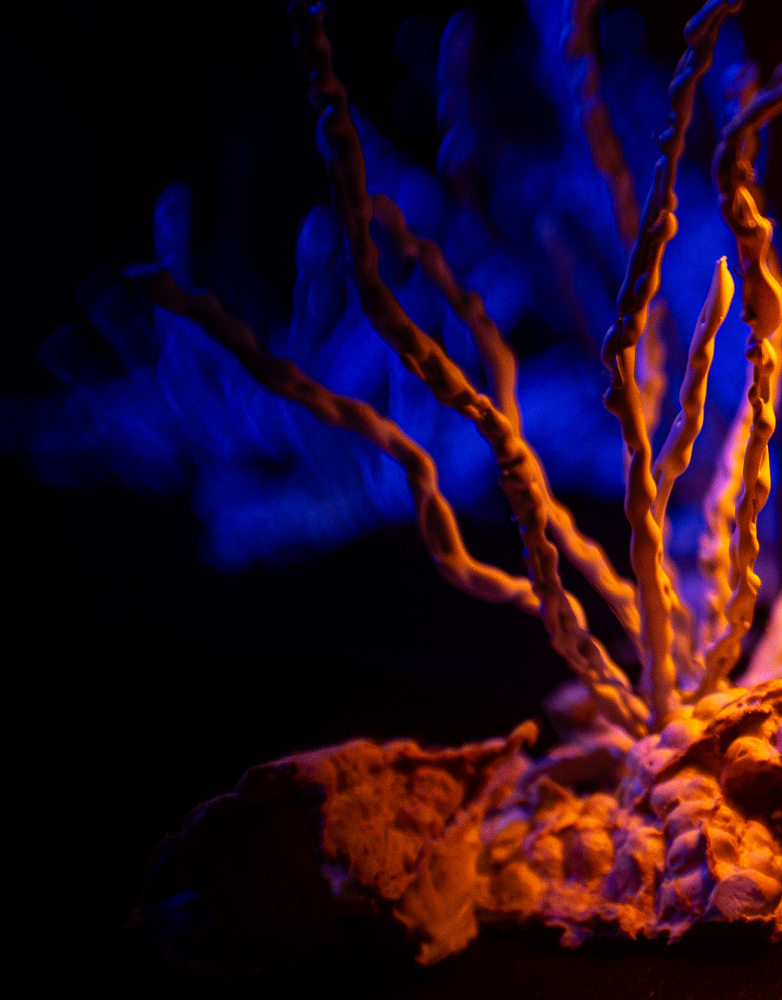
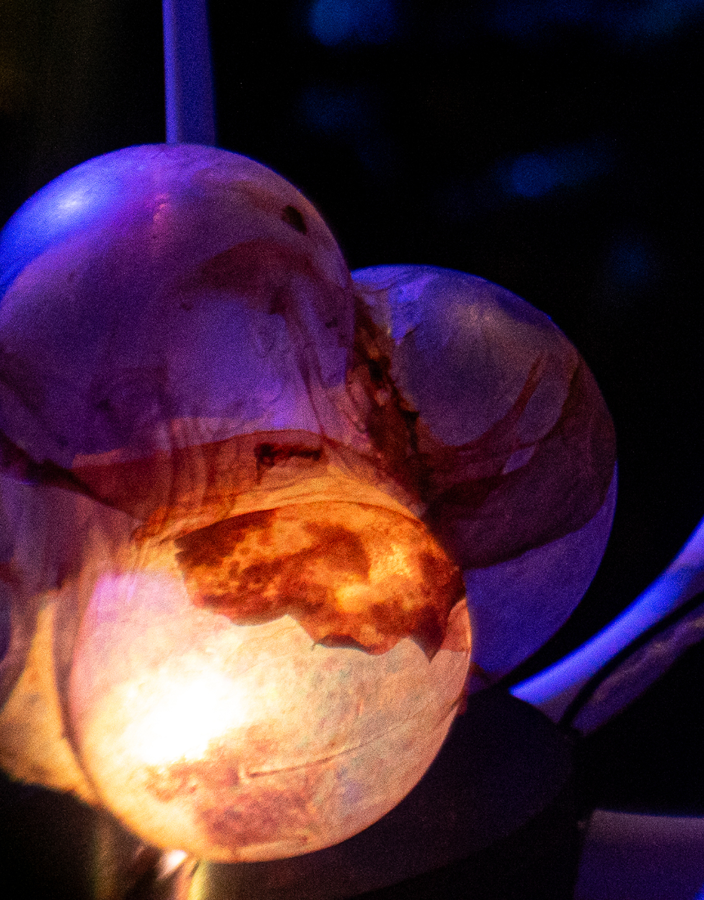
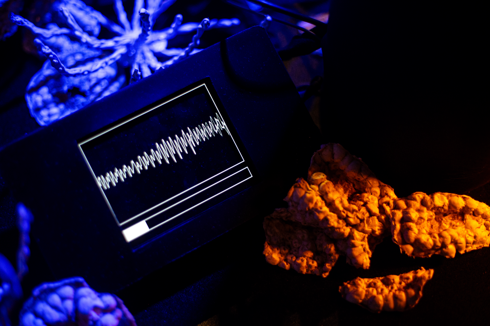

chorale
A speculative interactive installation reimagining AI
as a decentralized,
living mediator of interspecies.

project overview
Chorale is a speculative interactive installation set in a near-future Great Barrier Reef, where AI has evolved into distributed, ecologically embedded nodes. Each node is responsible for a small patch of the reef, learning to recognize the consent of the non-human entities it inhabits. Visitors embody reef organisms and interact through sound, light, and bodily presence.
team
B.E. Ergün, D. Kalay, N. Mesias, L.M. Mihalcea, G. Zamuner
my role
Speculative & Interaction Designer
context
More Than Human Design Studio, Politecnico di Milano
What if AI evolved like corals, distributed, fragile, and accountable to the living world it inhabits?
scenario
As the Great Barrier Reef faces accelerating bleaching, AI-driven monitoring systems increasingly reduce complex ecological conditions to quantified datasets, treating reef organisms as sources of data rather than participants in interaction. The question Chorale poses is: what would AI need to become if consent were treated as a persistent, revocable condition?

installation
Three interactive AI nodes, Node Shrimp, Node Algae, and Node Larvae, each respond to a different sensory channel. Node Shrimp detects bodily position and spatial attentiveness. Node Algae responds to the balance of light and shadow cast by a visitor's hands. Node Larvae listens for a sustained vocal sound within a specific amplitude threshold. When consent is reached, the node's kinesthetic arms slowly open, a tangible expression of a relational, revocable agreement. When the visitor withdraws, the relationship ends.
making
The physical nodes are housed in grown bacterial cellulose, a fragile, translucent biomaterial chosen to convey permeability and fragility rather than the rigid opacity of conventional AI hardware. Surrounding the nodes, bleached coral-like formations were crafted using pomegranate peel molds cast in plaster, echoing the geometry of reef structures. Each node pulses with embedded LED light as an idle state, stabilizing to a steady glow when consent is established.


outcomes
Chorale was exhibited at Interdependences, Fabbrica del Vapore, Milan (April 2026). The project received an Honorable Mention at the DBEW Award 2026 (Design Beyond East and West), selected by an international jury for demonstrating design excellence in harmonizing Eastern and Western values toward a sustainable future. The project will be presented at the NordiCHI 2026 conference.

pictures by giulio gatto